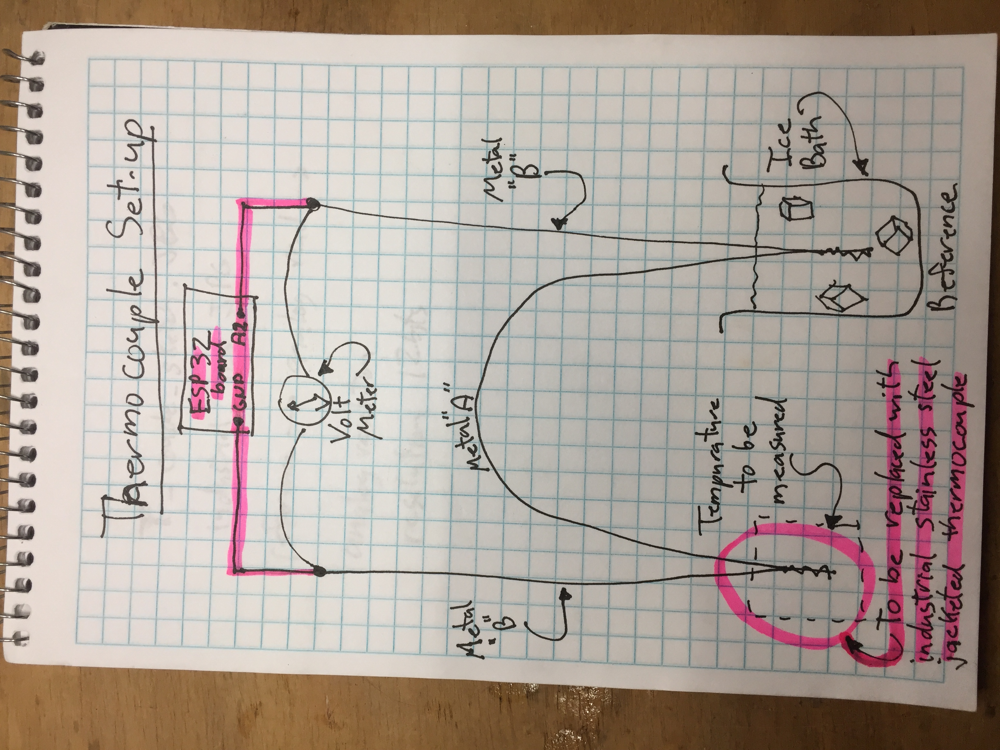
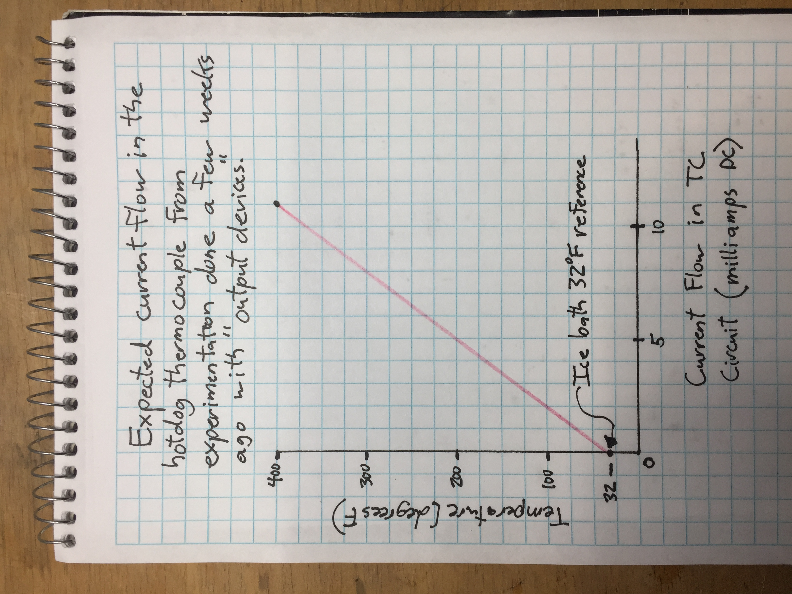

Computer Programing/Final Project
Here is a link to my web app that controls the ESP32 board: Hotdog Mission Control.

I will be installing an industrial J-type thermocouple on the hotdog cooker to measure "internal hotdog temperature." The system will still use an ice water bath as a reference cold junction. The milli-volt output of the tc circuit will be sent to the esp32 huzzah board, and dog temp will be displayed on the web app. Right now the temperature is available on the Firebase database, but does not display on the web app.(work in progress)
The graph below is the expected relationship between the thermocouple temperature and millivolts of current generated by the circuit.
Thermocouple Test Video:
Video of a test run with a thermocouple used as the ground "nail" on the hotdog. This seems to work well. Nothing smoked or blew up. Well, the hotdog did sizzle and smoke a little bit.